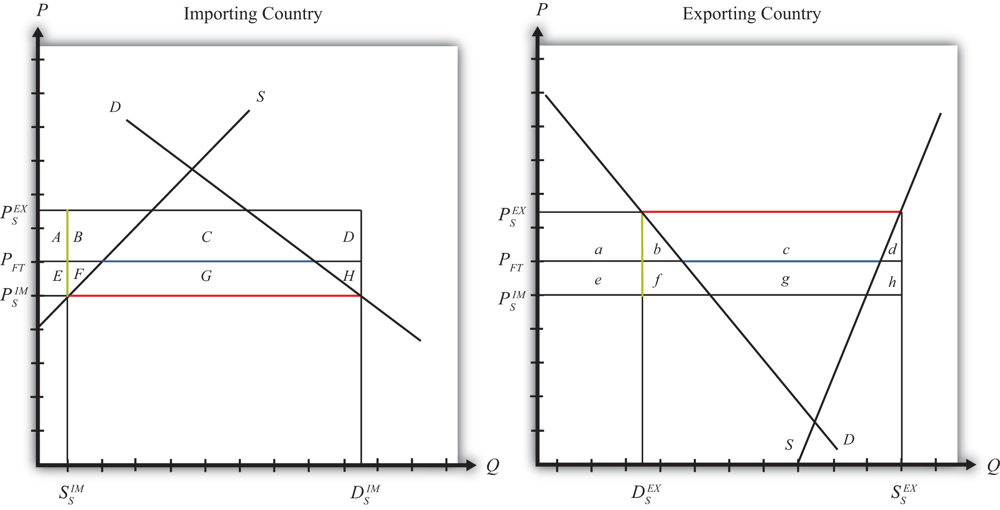

Suppose that there are only two trading countries: one importing country and one exporting country. The supply and demand curves for the two countries are shown in Figure 7.32 "Welfare Effects of a Subsidy: Large Country Case". PFT is the free trade equilibrium price. At that price, the excess demand by the importing country equals the excess supply by the exporter.
Figure 7.32 Welfare Effects of a Subsidy: Large Country Case
The quantity of imports and exports is shown as the blue line segment on each country’s graph (the horizontal distance between the supply and demand curves at the free trade price). When a large exporting country implements an export subsidy, it will cause an increase in the price of the good on the domestic market and a decrease in the price in the rest of the world (RoW). Suppose after the subsidy the price in the importing country falls to and the price in the exporting country rises to . If the subsidy is a specific subsidy, then the subsidy rate would be , equal to the length of the green line segment in Figure 7.32 "Welfare Effects of a Subsidy: Large Country Case".
Table 7.10 "Welfare Effects of an Export Subsidy" provides a summary of the direction and magnitude of the welfare effects to producers, consumers, and the governments in the importing and exporting countries. The aggregate national welfare effects and the world welfare effects are also shown.
Table 7.10 Welfare Effects of an Export Subsidy
| Importing Country | Exporting Country | |
|---|---|---|
| Consumer Surplus | + (E + F + G) | − (a + b) |
| Producer Surplus | − (E + F) | + (a + b + c) |
| Govt. Revenue | 0 | − (b + c + d + f + g + h) |
| National Welfare | + G | − (b + d + f + g + h) |
| World Welfare | − (F + H) − (b + d) |
Refer to Table 7.10 "Welfare Effects of an Export Subsidy" and Figure 7.32 "Welfare Effects of a Subsidy: Large Country Case" to see how the magnitudes of the changes are represented.
Export subsidy effects on the exporting country’s consumers. Consumers of the product in the exporting country experience a decrease in well-being as a result of the export subsidy. The increase in their domestic price lowers the amount of consumer surplus in the market.
Export subsidy effects on the exporting country’s producers. Producers in the exporting country experience an increase in well-being as a result of the subsidy. The increase in the price of their product in their own market raises producer surplus in the industry. The price increase also induces an increase in output, an increase in employment, and an increase in profit, payments, or both to fixed costs.
Export subsidy effects on the exporting country’s government. The government must pay the subsidy to exporters. These payments must come out of the general government budget. Who loses as a result of the subsidy payments depends on how the revenue is collected. If there is no change in total spending when the subsidy payments are made, then a reallocation of funds implies that funding to some other government program is reduced. If the subsidy is funded by raising tax revenues, then the individuals responsible for the higher taxes lose out. If the government borrows money to finance the subsidy payments, then the budget cut or the tax increase can be postponed until some future date. Regardless of how the subsidy is funded, however, someone in the domestic economy must ultimately pay for it.
Export subsidy effects on the exporting country. The aggregate welfare effect for the country is found by summing the gains and losses to consumers and producers. The net effect consists of three components: a negative terms of trade effect (f + g + h), a negative consumption distortion (b), and a negative production distortion (d).
Since all three components are negative, the export subsidy must result in a reduction in national welfare for the exporting country. However, it is important to note that a redistribution of income occurs—that is, some groups gain while others lose. The likely reason governments implement export subsidies is because they will benefit domestic exporting firms. The concerns of consumers must be weighed less heavily in their calculation since the sum of their losses exceeds the sum of the producers’ gains.
Export subsidy effects on the importing country’s consumers. Consumers of the product in the importing country experience an increase in well-being as a result of the export subsidy. The decrease in the price of both imported goods and the domestic substitutes increases the amount of consumer surplus in the market.
Export subsidy effects on the importing country’s producers. Producers in the importing country suffer a decrease in well-being as a result of the export subsidy. The decrease in the price of their product on the domestic market reduces producer surplus in the industry. The price decrease also induces a decrease in the output of existing firms, a decrease in employment, and a decrease in profit, payments, or both to fixed costs.
Export subsidy effects on the importing country’s government. There is no effect on the importing country’s government revenue as a result of the exporter’s subsidy.
Export subsidy effects on the importing country. The aggregate welfare effect for the country is found by summing the gains and losses to consumers, producers, and the government. The net effect consists of three components: a positive terms of trade effect (F + G + H), a negative production distortion (F), and a negative consumption distortion (H).
Although there are both positive and negative elements, the net national welfare effect reduces to area G, which is positive. This means that an export subsidy implemented by a large exporting country in a perfectly competitive market will raise national welfare in the importing country.
This result has inspired some economists to argue that the proper response for an importing country when its trading partner implements an export subsidy is simply to send along a thank you note.
It is worth noting here that the World Trade Organization (WTO) allows countries to impose countervailing duties to retaliate against its trading partners when it can be shown that an exporting country’s government has used export subsidies.
It is also important to note that not everyone’s welfare rises when there is an increase in national welfare. Instead, there is a redistribution of income. Consumers of the product will benefit, but producers and payers of government taxes will lose. A national welfare increase, then, means that the sum of the gains exceeds the sum of the losses across all individuals in the economy. Economists generally argue that, in this case, compensation from winners to losers can potentially alleviate the redistribution problem.
Export subsidy effects on world welfare. The effect on world welfare is found by summing the national welfare effects on the importing and exporting countries. By noting that the terms of trade gain to the exporter is equal to the terms of trade loss to the importer, the world welfare effect reduces to four components: the importer’s negative production distortion (B), the importer’s negative consumption distortion (D), the exporter’s negative consumption distortion (f), and the exporter’s negative production distortion (h). Since each of these is negative, the world welfare effect of the export subsidy is negative. The sum of the losses in the world exceeds the sum of the gains. In other words, we can say that an export subsidy results in a reduction in world production and consumption efficiency.
Consider the following trade policy action (applied by the domestic country) listed along the top row of the table below. In the empty boxes, use the following notation to indicate the effect of the policy on the variables listed in the first column:
+ the variable increases
− the variable decreases
0 the variable does not change
A the variable change is ambiguous (i.e., it may rise, it may fall)
Use a partial equilibrium model to determine the answers and assume that the shapes of the supply and demand curves are “normal.” Assume that the policy does not begin with, or result in, prohibitive trade policies. Also assume that the policy does not correct for market imperfections or distortions.
For example, an export subsidy applied by a large country will cause an increase in the domestic price of the export good; therefor a + is placed in the first box of the table.
Table 7.11 Export Subsidy Effects
| Export Subsidy by a Large Country | |
|---|---|
| Domestic Market Price | + |
| Domestic Industry Employment | |
| Domestic Consumer Welfare | |
| Domestic Producer Welfare | |
| Domestic Government Revenue | |
| Domestic National Welfare | |
| Foreign Price | |
| Foreign Consumer Welfare | |
| Foreign Producer Welfare | |
| Foreign National Welfare |